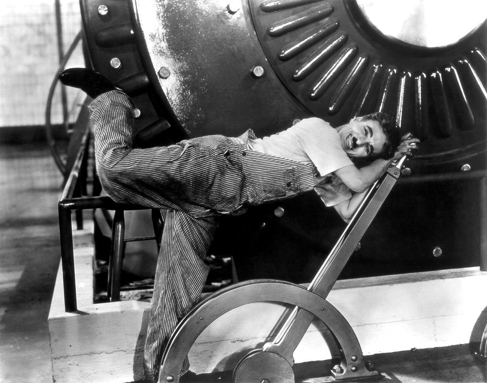

Modern Times, Publicity Photograph (Charlie Chaplin in the Machine)
Charlie Chaplin · 1936 · Publicity still, black and white
In copyright. Look and learn: shown for study, not for download.
Charlie Chaplin began preparing this film in 1934 as his first talkie and got as far as writing a dialogue script and trying some sound scenes. He gave that up and went back to a silent format with synchronised sound effects and a few spoken lines. Most of it was shot at the silent speed of 18 frames a second, so that at the sound speed of 24 the slapstick runs faster. This is a publicity photograph issued by United Artists.